Netstat command displays various network related information such as network connections, routing tables, interface statistics, masquerade connections, multicast memberships etc.,
Examples of some practical netstat command :
- -a -all : Show both listening and non-listening sockets. With the –interfaces option, show interfaces that are not up
# netstat -a | more : To show both listening and non-listening sockets.
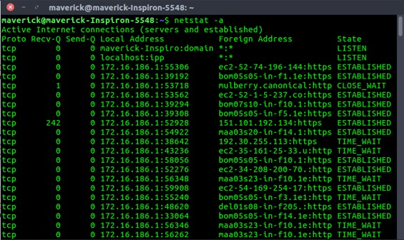
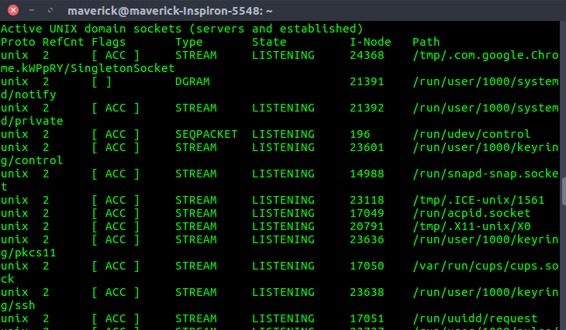 - List all tcp ports.
# netstat -at : To list all tcp ports.
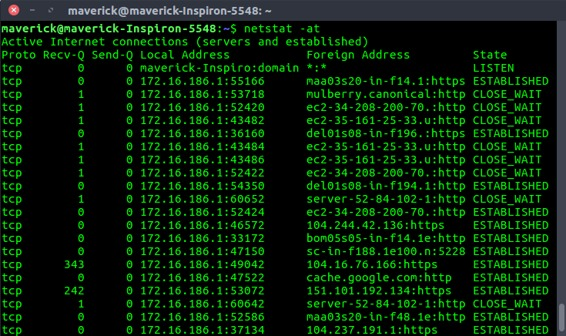
- List all udp ports.
# netstat -au : To list all udp ports.
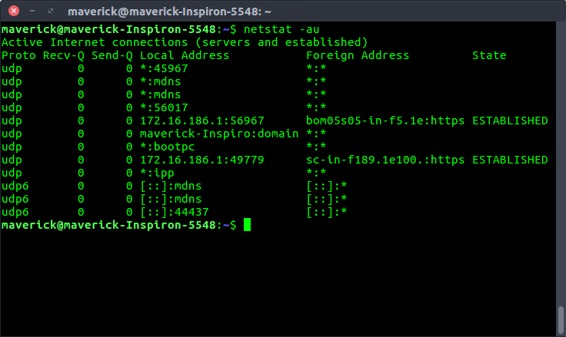
- List only listening ports.
# netstat -l : To list only the listening ports.
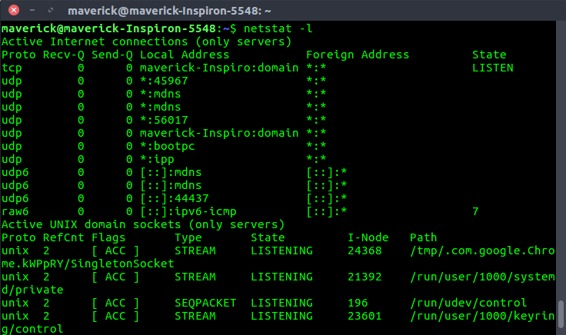
- List only listening TCP ports.
# netstat -lt : To list only the listening tcp ports.
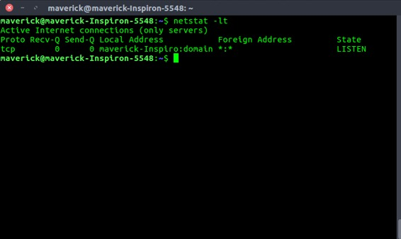
- List only listening UDP ports.
# netstat -lu : To list only the listening udp ports.
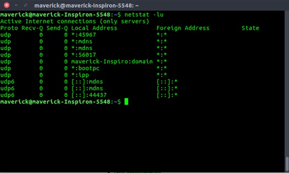
- List only the listening UNIX ports
# netstat -lx : To list only the listening UNIX ports.
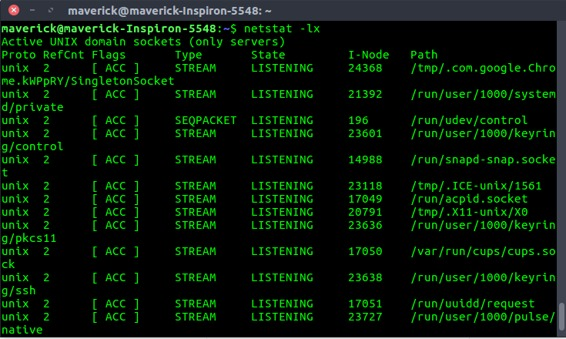
- List the statistics for all ports.
# netstat -s : To list the statistics for all ports.
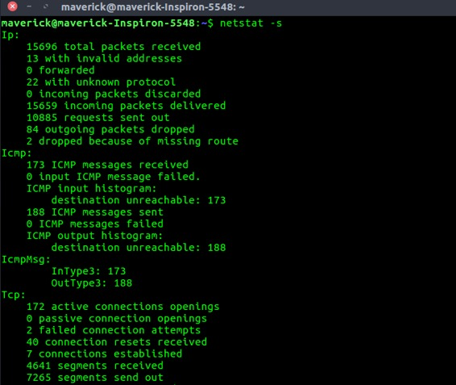
- List the statistics for TCP (or) UDP ports.
# netstat -st(TCP) : To list the statistics for TCP ports.
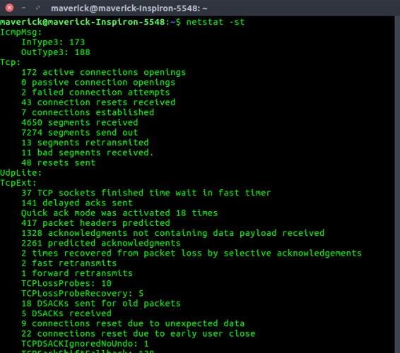
# netstat -su(UDP) : List the statistics for UDP ports.
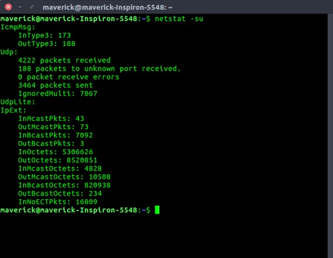
- Display PID and program names in the output.
# netstat -pt : To display the PID and program names.
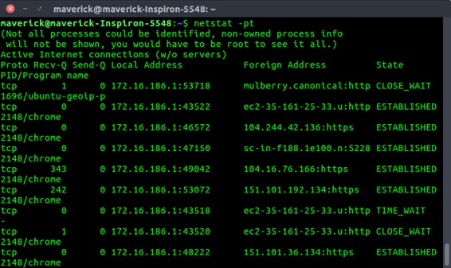
- Print the netstat information continuously.
netstat will print information continuously every few seconds.
# netstat -c : To print the netstat information continuously.
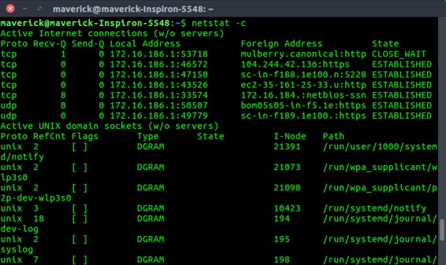
- The non-supportive address families in the system.
# netstat --verbose : To get the non-supportive address families in the system.
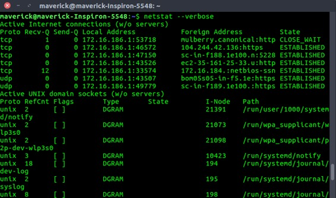
At the end, we have something like this :
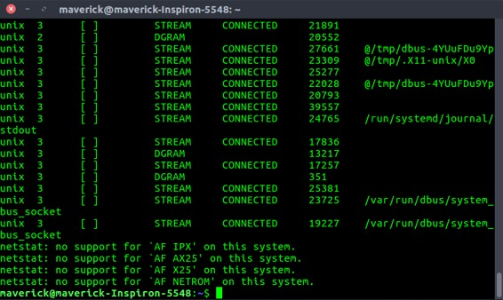
- The kernel routing information.
# netstat -r : To get the kernel routing information.
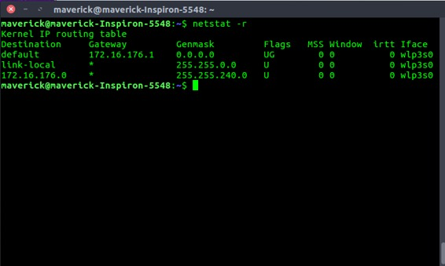
- The port on which a program is running.
# netstat -ap | grep ssh : To get the port on which a program is running.
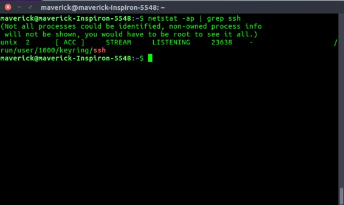
- Which process is using a particular port:
# netstat -an | grep ':80' : To get the process which is using the given port.
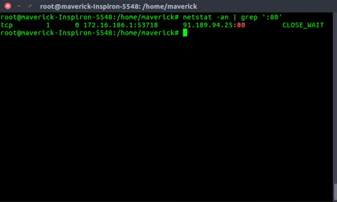
- List of network interfaces.
# netstat -i : To get the list of network interfaces.
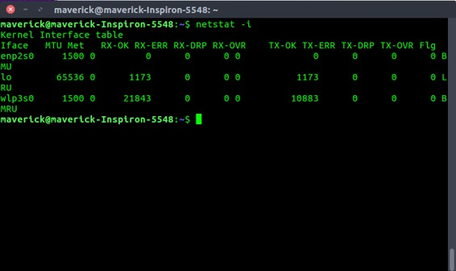
Display extended information on the interfaces (similar to ifconfig) using netstat -ie: # netstat -ie : To display extended information on the interfaces
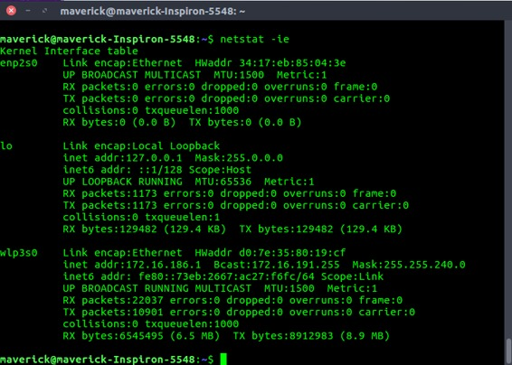
Reference :
Linux Manual page for netstat